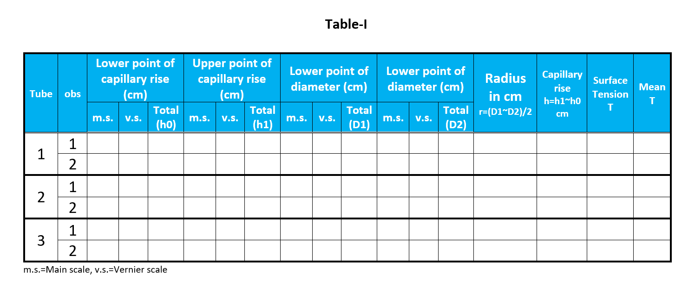
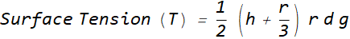

Calculate the least count of the travelling microscope for vertical scale(because we use only vertical movement of the travelling microscope)
Make the capillary tubes horizontal using the key S3 and determine the internal radius of the leftmost capillary tube by moving the travelling microscope upward (using slider S1). Record the data in table I.
Record the same by moving the microscope downward and take the mean of them.
Repeat the same procedure for other tubes in order to determine their radius. (Use slider S2to go different tubes.)
Make the capillary tubes vertical using the key S3 to estimate the capillary rise in individual tubes and record the readings in table I

Calculate the surface tension of the liquid for each tube, using the formula,

where, d and b are the thickness and breadth of the metal bar respectively. In this experiment d is the capillary rise, r is the internal radius of the tube, g=980 m/s2 and d is the density of the liquid (in this case d=1 for water).
Repeat the entire procedure for different values of x and calculate Young's Modulus for individual cases.
The slider can be tuned by pressing the arrow buttons on keyboard.